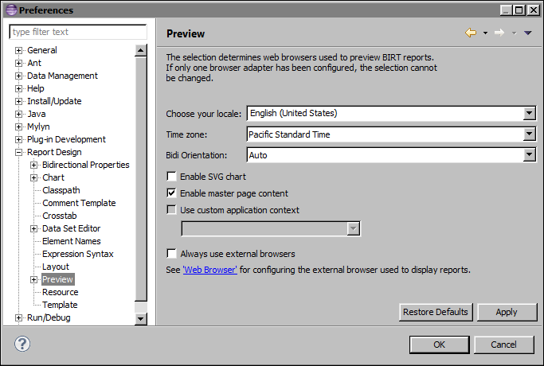
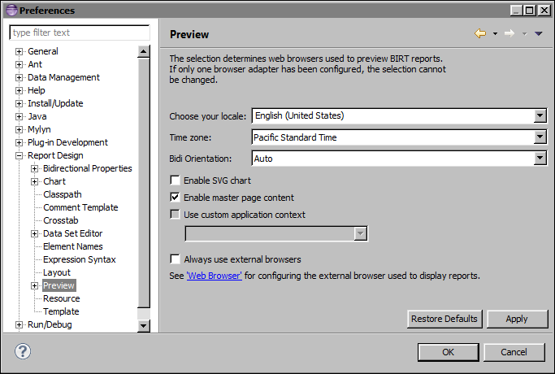

How to preview a report in a different locale 1 Choose Window→Preferences. 2 On the left side of the dialog, expand Report Design, then choose Preview. The preview properties appear, as shown in Figure 20-6.  Figure 20-6 Preview preferences in BIRT Report Designer 3 In Choose your locale, select a locale in which to preview the report, then choose OK. The selected locale applies only to previewed reports. It does not change the locale that your machine uses, nor does it change the localized text that appears in the report design. 4 Preview the report. The localized text appears in the language for the selected locale. 5 To preview the report in another language, repeat the previous steps to select a new locale.
